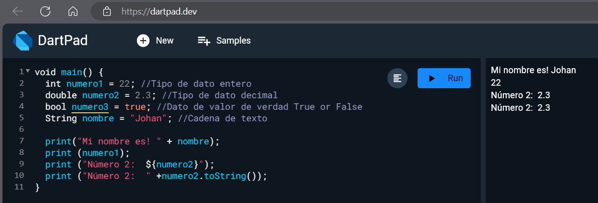
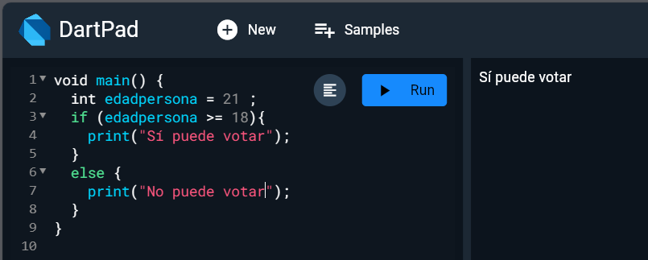
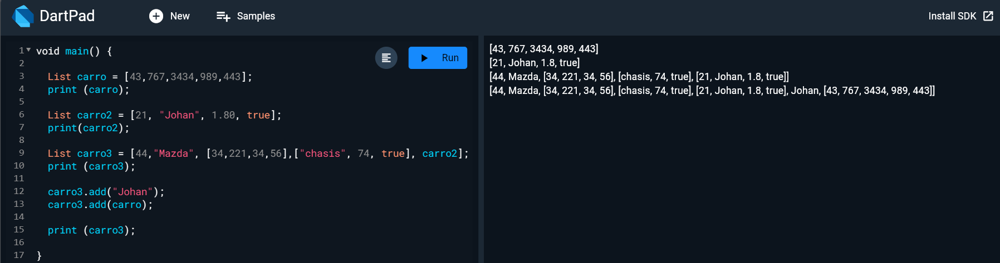
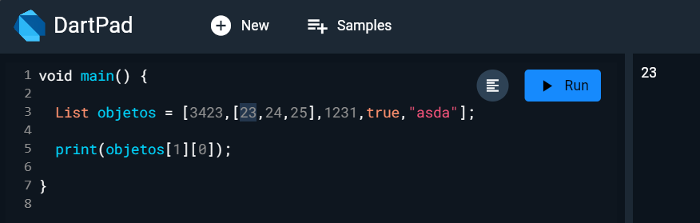
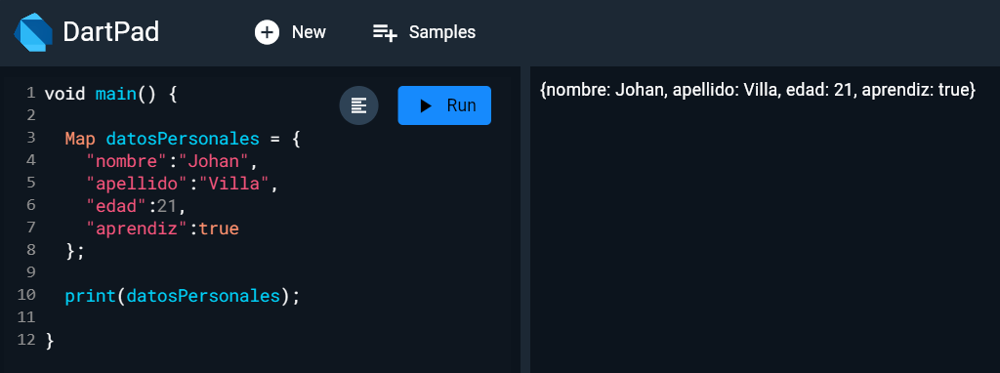
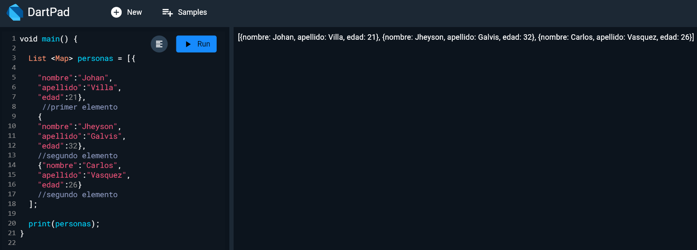
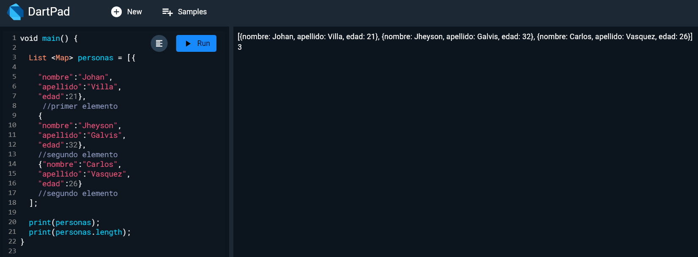

Sesión 1 de flutter y Dart
Dart es un lenguaje de programacion de alto nivel, altamente tipado
Usa el metodo Void() como lo hacen C# y sus derivados de C y Java
Toda linea de codigo, debe terminar en semicolon o punto y coma;
Además tambien está identado por llaves como JavaScript

Tipos de datos en Dart

Concatenación vs Interpolación

Comentando todo el codigo por multiples líneas

Interpolando diferentes variables con una presentación

Condicionales en Dart

Más copndicionales

Tipo de datos dynamic y var

Listas


Map


Lista dentro de una lista

Diccionario de diferentes personas

Length

Prueba logica con ítem de lista

Tres tipos de funciones diferentes para sumar